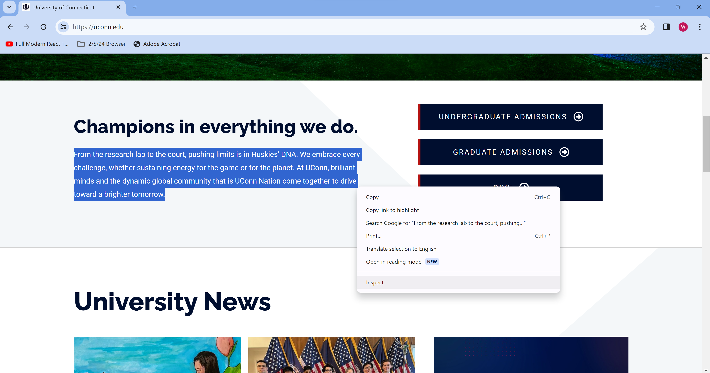
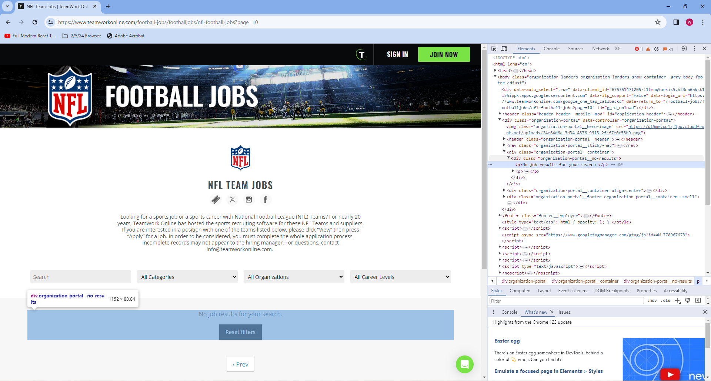
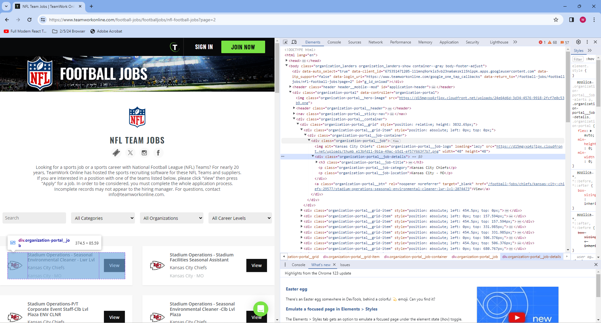
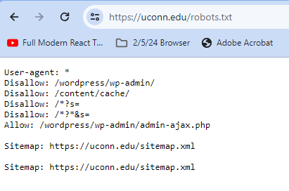
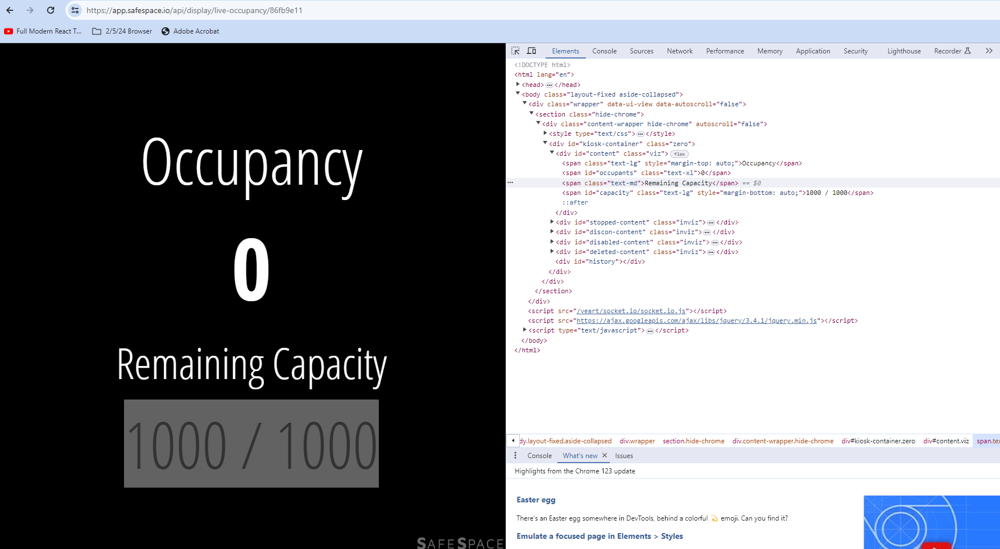

from bs4 import BeautifulSoup
import requests
url = 'https://uconn.edu/'
request = requests.get(url)
if request.status_code == 200:
soup = BeautifulSoup(request.content, 'html.parser')11 Advanced Topics
11.1 Web Scraping
This section was written by William Qualls.
11.1.1 Introduction
My name is Will Qualls, I’m a grad student looking to graduate with an M.S. in computer science this spring. I want to go into sports data or software engineering. I chose this topic, because when I was first learning python I got to work with web scrapers, and I thought it was super cool how I could take any data displayed on a webpage and get it in python to manipulate and work with. One of my first personal projects was web-scraping ProFootballRefrence to get NFL player stats and try to use them to create a metric for comparing players across different eras of football. Web scraping is a tool that I still find myself using, as recently as last football season I used a web scraper to automate the collection of NFL matchups and their results so my friends and I could do a game-picks pool in google sheets, where all we had to do was pick winners before the game, and then python would get the scores from ProFootballRefrence and grade our picks for us.
11.1.1.1 What is Web Scraping?
Web scraping is the act of using a computer to parse through a webpage’s HTML file and extract relevant information.
Most webpages are coded using something called HTML (HyperTextMarkupLanguage), and every website is, at a high level, your browser’s interpretation of an HTML document. HTML is a very structured language, and almost anything you see on the screen has to be in that HTML document, unless the webpage is dynamically fetching it from another source. So, web scraping is a way for computers to analyze that HTML document and extract data from the webste.
11.1.1.2 Why Web Scraping?
One primary use of web scraping, up until recently, was to cheaply and easily gather data from social media sites such as twitter, however recent updates to the API policies of many of these sites has made this infeasable. The main power of web scraping lies in the ability to gather data from any internet source, provided you have the credentials to acess said data, and that the source dosen’t explicitly permit you from doing so. This means that data scientists don’t need to rely on a webpage to have .csv files or other prepared data ready for them, thanks to web scraping they can simply visit a website and extract the information they need. Web scraping is still a very useful tool, as we will see later in this project.
11.1.1.3 Introducing BeautifulSoup.
One potential issue with web scraping, is that websites can be very large. While it’s entirely possible for someone with moderate python experience to extract data from HTML code using string manipulation due to how well structured HTML is, this would be a messy, and time consuming task. Luckily, there are many python libraries pre-written, which allow for parsing through HTML much easier than this. One of the most popular ones, and the one we will be using today. is called Beautiful Soup.
To install beautiful soup on your machine, run “pip install beautifulsoup4” in the terminal, inside the directory where you want the installation.
Here is an example of using beautiful soup, along with the builtin requests module, to acess the homepage of the UConn website.
There isn’t very much intresting content on the homepage of the UConn website, just a quick PR blurb. For the purposes of this example though, we will extract that blurb.
11.1.2 UConn website example
In order to extract data from a website, you need to know the HTML structure of the website. To find this, we go into a browser with the desired webpage open, right click on what we want to extract, and click inspect element.

One method of grabbing something from a page, if you know exactly what you want, is using a CSS selector, and the .select method on a BeautifulSoup object, which we named “soup” above. To get a CSS selector, right click on the tab containing the text you want, mosuing over “copy” and then “copy selector”

Then, we can paste the selector into python, and call soup.select(). This method returns a list containing every element matching the CSS selector we input. This time the list is of size 0, since the selector we input is very specific.
selector = '#post-2 > div.fl-builder-content.fl-builder-content-2.fl-builder-content-primary.fl-builder-global-templates-locked > div.fl-row.fl-row-full-width.fl-row-bg-none.fl-node-604b7f4d94771.fl-row-default-height.fl-row-align-center.fl-row-has-layers > div > div.fl-row-content.fl-row-fixed-width.fl-node-content > div > div > div > div.fl-col-group.fl-node-604b7f4d94a9a.fl-col-group-nested.fl-col-group-equal-height.fl-col-group-align-center.fl-col-group-custom-width > div.fl-col.fl-node-604b7f4d94a9b.fl-col-small-custom-width > div > div.fl-module.fl-module-rich-text.fl-node-604b7f4d94a9e > div > div > p'
blurb = soup.select(selector)
print('Blurb is of len {}'.format(len(blurb)))
print(blurb[0].text)Blurb is of len 1
From the research lab to the court, pushing limits is in Huskies’ DNA. We embrace every challenge, whether sustaining energy for the game or for the planet. At UConn, brilliant minds and the dynamic global community that is UConn Nation come together to drive toward a brighter tomorrow.As we see, we now have the blurb in Python as a string! This allows us to mainpulate it, save it, or do whatever we please with it. One downside of this example is that the CSS selector method can limit our flexibility; If we wrote this web scraper as a function using this selector, it would be essentially useless on any other webpage. Especially given the fact that all we did was essentially copy and paste a few sentances from UConn’s homepage into python, it would have been quicker to to it manually. Next, let’s look at a more practical example of web scraping.
11.1.3 Job Search Example
When trying to find a job or an internship, it can become pretty tedious to repeatedly type the same five keywords, into the same five websites, just to look through the same twelve jobs you’ve already seen that you’ve already ruled out, for one reason or the other.
It would be much easier to just run a python program that can web-scrape the job board and pick out the ones that intrest you based on a few keywords.
Let’s take a look at the website TeamWorkOnline, a job board for working in sports, where most major organizations such as the NFL, MLB, NBA, and others will post job openings. I spent alot of time during internship season looking for jobs here, before developing a web scraper that would gather all the available jobs, and then look through them for me, only showing me ones I might be intrested in. The code for the scraper is below; We’ll run it once and then go through it to see how it works.
def Job_Scraper():
Internships = []
Full_Jobs = []
Questionable = []
Default_URL = 'https://www.teamworkonline.com/football-jobs/footballjobs/nfl-football-jobs?page='
Found = True
i = 1
keywords = ['data','Data','Software','software','anal','Anal','quant','Quant']
while Found == True:
print('On page {}'.format(i))
url = Default_URL + str(i)
req = requests.get(url)
if req.status_code == 200:
soup = BeautifulSoup(req.content, 'html.parser')
try:
line = soup.find_all(attrs={'class':'organization-portal__no-results'})
if len(line) > 0:
Found = False
break
except:
print('Good! Pass')
pass
table = soup.find_all(attrs={'class':'organization-portal__grid'})
table = table[0]
jobs = table.find_all(attrs={'class':"organization-portal__job"})
for job in jobs:
team = job.find(attrs={'class':"organization-portal__job-category"}).string
location = job.find(attrs={'class':"organization-portal__job-location"}).string
name = job.find(attrs={'class':"organization-portal__job-title"}).string
for keyword in keywords:
if keyword in name:
if 'intern' in name or 'Intern' in name:
Internships.append((team,location,name))
elif 'Ass' in name or 'ass' in name:
Questionable.append((team,location,name))
else:
Full_Jobs.append((team,location,name))
i += 1
all_jobs = dict()
all_jobs['Internships'] = Internships
all_jobs['Full_Jobs'] = Full_Jobs
all_jobs['Questionable'] = Questionable
return all_jobs
jobs = Job_Scraper()
for key in jobs:
print(key)
for job in jobs[key]:
print(job)On page 1
On page 2
On page 3
On page 4
On page 5
On page 6
Internships
Full_Jobs
('Tennessee Titans', 'Nashville · TN', 'Data Engineer')
('Houston Texans', 'TX', 'Sr. Manager, Data Science')
('Denver Broncos Football Club', 'Denver · CO', 'Database Marketing Coordinator ')
('Arizona Cardinals', 'Tempe · AZ', 'Vice President, Analytics & Data Strategy')
('Arizona Cardinals', 'Tempe · AZ', 'Vice President, Analytics & Data Strategy')
('Arizona Cardinals', 'Tempe · AZ', 'Director, Analytics & Data Strategy')
('Arizona Cardinals', 'Tempe · AZ', 'Director, Analytics & Data Strategy')
('Pittsburgh Steelers', 'Pittsburgh · PA', 'Database Marketing Analytics Manager')
('Pittsburgh Steelers', 'Pittsburgh · PA', 'Database Marketing Analytics Manager')
('Washington Commanders', 'Landover · MD', 'Incident Tracking Analyst - Seasonal/Part-time')
('Los Angeles Rams', 'Agoura Hills · CA', 'CRM Analyst')
('Washington Commanders', 'Riverdale · MD', 'General Accountant & Accounts Payable Analyst')
('USA Football', 'Indianapolis · IN · Open to Remote', 'Marketplace Data Contractor (2023) - (Remote)')
Questionable
('Kansas City Chiefs', 'Kansas City · MO', 'Marketing - Media & Marketing Analytics Seasonal Assistant')
('Arizona Cardinals', 'Tempe · AZ', 'Training Camp Assistant, Analytics')In the code above, the Job_Scraper() function starts off by creating 3 lists to sort any found jobs into, so we can show the user what type of job they’ve found.
We then declare a default_url variable. The jobs on teamworkonline’s NFL page span over several pages, luckily they all follow the same format, with the only difference being the page number (which can be 1 or null for the first page). This allows us to easily iterate through these pages and find all the jobs.
The function will operate in a while loop, where as long as it finds jobs on page i (a counter we increase the value of at the end of each iteration), it will grab and save them; if no jobs are found then the boolean Found is set to false, to let the while loop know to end, and the loop breaks.
We also see a list of keywords. This is how our scraper knows which jobs to save and show us, and which to ignore. Any job containing any of these terms will be returned to us at the end.
Inside the while loop, we construct the URL by adding i to the default url, and then we use the requests library to get the webpage, and create a beautiful soup object with it.
We then use the function find_all() on our soup object. find_all can take a multitude of different parameters, such as an HTML tag, a class name, a dictionary of attributes, or a combination of these. It will return a list of all HTML elements that match this criteria. In this case, we ask for all elements of class organization-portal__no-results. An element with this class will only appear when there are no jobs on the page, meaning if anything is returned from this call, we know we’ve gone through all the jobs and we can change the value of our Found boolean and break. Just like how we were able to get the CSS selector using inspect element on the UConn webpage, we can get the class of this element by inspecting.

If nothing is found, the function will call find_all again, this time searching for elements where the class is organization-portal__job. To avoid just writing a wall of text, let’s walk through this line by line on the second page of the job board.
Internships = []
Full_Jobs = []
Questionable = []
URL = 'https://www.teamworkonline.com/football-jobs/footballjobs/nfl-football-jobs?page=2'
keywords = ['data','Data','Software','software','anal','Anal','quant','Quant']
req = requests.get(URL)
if req.status_code == 200:
soup = BeautifulSoup(req.content, 'html.parser')
table = soup.find_all(attrs={'class':'organization-portal__grid'})This gives us a single HTML element, which functionally serves as a table containing several other HTML elements refrencing individual jobs. Let’s show this, and then make table refer to the element, rather than a list where the element is the only item.
print('table is len {}'.format(len(table)))
table = table[0]table is len 1Now, we can use find_all again with a different attribute to get a list of elements refrencing individual jobs.
jobs = table.find_all(attrs={'class':"organization-portal__job"})
print('There are {} Jobs'.format(len(jobs)))There are 48 JobsThere are 48 jobs nested inside our original “table” HTML element. Let’s take a closer look at the structure of this element, to get a more concrete example of what we want to scrape.

As we can see, and as we discussed earlier, the organization-portal__grid class contains instances of organization-portal__job, which in turn contains more HTML elements. If we look towards the bottom of the HTML tree shown, we notice 3 more class names: organization-portal__job-title, organization-portal__job-category, and organization-portal__job-location. Let’s extract these.
target_job = jobs[0]
team = target_job.find(attrs={'class':"organization-portal__job-category"}).string
location = target_job.find(attrs={'class':"organization-portal__job-location"}).string
name = target_job.find(attrs={'class':"organization-portal__job-title"}).string
print('Team: {}\nLocation: {}\nJob Title: {}\n'.format(team,location,name))Team: Indianapolis Colts
Location: Indianapolis · IN
Job Title: Membership Services Manager
We now have the job title, organization, and location for this first job. What the code in the function does, is loop through every job (which is an HTML element returned by a call to find_all), and extract this data. It will then check if any of the provided keywords are in the job title, and if they are it will check for other common words such as “Intern” or “Assist” to determine the level of job before sorting it into a list.
Let’s double check to make sure our code works for al jobs, and not just the one we checked.
found_jobs = []
for job in jobs:
target_job = job
team = target_job.find(attrs={'class':"organization-portal__job-category"}).string
location = target_job.find(attrs={'class':"organization-portal__job-location"}).string
name = target_job.find(attrs={'class':"organization-portal__job-title"}).string
found_jobs.append('Team: {}\nLocation: {}\nJob Title: {}\n'.format(team,location,name))
print(len(found_jobs))
print(found_jobs[9])48
Team: Green Bay Packers
Location: Ashwaubenon · WI
Job Title: Titletown Seasonal Summer Operator + Laborer
This allows us to simply run find_jobs whenever we want, and get back all the jobs that a search for any of the keywords would have returned, making checking in on job openings as often as you want, an effortless task.
Finally, we’ll look at a more data science specific example, showing how webscraping can be used to gather larger volumes of data, in a quick and automated fashion.
11.1.4 More in depth uses of Web Scrapers
I won’t show code here, since most web scraping follows the same pattern; get HTML, inspect the website, and find tags ot other attributes to extract date from. However, I do want to take a moment to comment on how the technique can be expanded to larger scale projects than simply wanting a quicker way to check the job market.
In the previous example, we had a web scraper that took advantage of commmon formatting in a group of HTML pages to quickly gather data from all of them. This is a common occurance, which is great for us as data scientists. In the past, I’ve used web scraping to gather injury data from every NFL team for every season going back to 2009, since each webpage has an identical structure. This allowed me to gather data on over 22,000 players listed across 448 seperate webpages, by building the scraper for one webpage, and then iterating through all the URLs for each team’s injury page, which also had a similar structure. This program took well over an hour to run, but it was exponentially faster than trying to gather all that data by hand. Furthermore, it removed the chance of human error ocurring, which was massive for data accuracy.
Web scraping can take a long time when working with a high volume of webpages, simply because it takes time to connect to a webpage. Another program I wrote for my senior design project iterated through the course catalog for every single major at UConn, gathered the links to each individual course, and then scraped those individual course pages to collect data on the class, such as where/when it was offered, class size, and professor. This program had to connect to thousands of webpages, and took several hours to run. It was still however, like the ProFootballReference scraper, exponentially faster and more accurate then collecting the data by hand
11.1.5 Downsides
For as powerful as webscraping is, it has it’s limitations. Not every website wants you to scrape everything on it, and if they find you using a web crawler or scraper they can block your IP. Web scraping can also be slow when working with a large number of webpages, as explained earlier, and dosen’t always work as expected with dynamically updated data.
11.1.5.1 Robots.txt
Most websites at the very least will make use of something called a robots.txt file to let you know who is allowed to scrape their site, and what data is off limits. Some more advanced websites have rate limits to prevent you from scraping the page too many times, and others can differentiate between web scrapers and normal human traffic. This can limit what we’re allows to web scrape. To see a website’s robots.txt file, simply add ‘/robots.txt’ to the end of a page’s home URL. Here is the robots.txt for UConn’s website:

The User-Agent line tells us who the following commands applies to, and the * means that the rules apply to all users. Then, the disallow commands tell us what pages crawlers and web scrapers aren’t allowed to visit. Any page with that URL prefix is disallowed by virtual of that line, so Disallow: Example/Page would also tell a program not to visit Example/Page/Page2.
We also see an allow command. This can be used to allow a crawler to visit a webpage that was previously barred by a disallow command. This is used when a page someone wants to allow has a previously barred prefix. In this case, while /wordpress/wp-admin/ and most of it’s postfixes are disallowed, /wordpress/wp-admin/admin-ajax.php has been specifically allowed, so robots can visit them.
Let’s look at a more advanced robots.txt file, this time for professional football data site ProFootballRefrence.

This time, we see multiple user agents. AhrefsBot,SlySearch has a Disallow: /, as does GPT bot. This means that these agents are being asked not to crawl or scrape any part of ProFootballReference. Twitterbots however, have an empty disallow, meaning that everything is allowed.
Below, are a series of disallows that apply to everyone. In general, Google will go with the least restrictive directive, meaning that scraping these websites is off limits to all agents except a Twitterbot.
11.1.5.2 Dynamic Data
Web scrapers don’t always work when working with dynamically allocated data. Consider the following webpage: 
This website dynamically updates every second to tell you how many people are using the uconn rec center at any given moment. The Number in the example is at 0, since this is being written outside of the gym’s operating hours, but during the workday it would be updating.
Say we wanted to gather data on how many people were at the gym at all times of the day, so we could graph it and discover when the busisest and slowest times were at the rec. Theoretically we could web scrape the page right? Let’s see.
new_url = 'https://app.safespace.io/api/display/live-occupancy/86fb9e11'
req = requests.get(new_url)
if req.status_code == 200:
soup = BeautifulSoup(req.content, 'html.parser')
answer = soup.find_all(attrs = {'id':'occupants'})
print(answer)[<span class="text-xl" id="occupants"></span>]As we can see, the space where we’d expect the occupancy number to be is empty. This occurs regularly when trying to scrape dynamically updated data. So, web scraping isn’t always the best option when trying to acess constantly updating figures, and someone wishing to acess the data would likely need to find out where the website is receiving the data from, and try and get permission to access that source.
11.1.6 Conclusion
Web scraping is a very powerful tool for data scientits, as it allows us to gather data from any publicly availble webpage. The most popular library, Beautiful Soup, allows us to easily parse through a webpage, searching by tag, attribute, or content to find what we need. Although it has it’s drawbacks, this makes web scraping simple, and easily trasferrable to other similarly formatted webpages, allowing us to effortlessly collect large amounts of data.
11.1.7 Sources
https://www.conductor.com/academy/robotstxt/
11.2 Animation
Hello everyone! My name is Ge Li and I am a senior double major in Math and Statistics. I am going to do the Animation analysis here with python.
11.2.1 Introduction
11.2.1.1 What is data animation?
Data animation is the process of adding movement, interactivity, and visual effects to your data displays. It can help you highlight changes over time, compare different scenarios, reveal hidden details, and create a dynamic and immersive experience for your viewers. Data animation can take many forms, such as animated maps, timelines, transitions, sliders, and interactive dashboards. You can use data animation to enhance your presentations, reports, websites, or social media posts.
11.2.1.2 Why animate your data?
Data animation can provide a variety of advantages to your data analysis and communication. Capturing attention and generating interest is possible by adding color, motion, and sound. It can also improve understanding and retention by showing how complex or abstract concepts work or change over time. Furthermore, data animation can be used to persuade and influence by conveying a message or story with your data and creating emotional impact. It can also motivate action or change by demonstrating consequences, opportunities, or solutions
11.2.1.3 How to animate your data?
Before animating your data, it’s important to define your purpose and audience. Consider the main question, problem, or idea you want to address and the best way to communicate it. Then choose the data and format that best suit your purpose and audience. What type of data do you have? How much, how complex, and how reliable is it? What kind of chart, graph, or map will best display it? Finally, decide how to animate and interact with your data. What kind of movement, transition, or effect will you use? How will you control the speed, direction, and duration of the animation? How will you enable user input, feedback, or navigation? By following these steps, you can create an effective animation that meets your goals and resonates with your audience.
11.2.2 Examples of data animation using NYC Rodents Dataset
11.2.2.1 Data Examination and Queation Exploration
The dataset contains information on rodent complaints across different locations, with a total of 2,669 entries. Each entry includes details such as the unique key, created and closed dates of the complaint, agency and agency name handling the complaint, complaint type, descriptor (specifics about the complaint), location type, incident zip code, address, and additional geographical and administrative details.
Given the nature of this dataset, we can explore several interesting questions and topics for data animation, focusing on trends, patterns, and insights related to rodent complaints. Here are some potential ideas:
Temporal Trends: How have rodent complaints changed over time? We can animate the number of complaints over the months to identify any seasonal patterns or trends.
Geographical Distribution: Which areas have the highest concentration of rodent complaints? An animated heatmap or choropleth map showing the density of complaints across different zip codes or boroughs could provide insights.
Comparison by Location Type: How do rodent complaints vary by location type (e.g., residential vs. commercial buildings)? We can create an animated bar chart that updates over time to show the distribution of complaints by location type.
11.2.2.2 Temporal Trends over time
An animation is a sequence of frames where each frame corresponds to a plot on a Figure. The animation process in Matplotlib can be thought of in 2 different ways:
FuncAnimation: Generate data for first frame and then modify this data for each frame to create an animated plot.
ArtistAnimation: Generate a list (iterable) of artists that will draw in each frame in the animation.
FuncAnimation is more efficient in terms of speed and memory as it draws an artist once and then modifies it. On the other hand ArtistAnimation is flexible as it allows any iterable of artists to be animated in a sequence.
11.2.2.3 Geographical Distribution
A GeoJSON file for NYC ZIP code boundaries is a dataset that contains geographic information about the boundaries of ZIP code areas in New York City represented in the GeoJSON format. GeoJSON is a format for encoding a variety of geographic data structures, such as points, lines, polygons, and multi-part collections.
GeoJSON files provide spatial data that can be used for various geospatial analyses, such as understanding the distribution of demographic characteristics, economic activities, or public services across different ZIP code areas in New York City.
With the help of libraries like geopandas, folium, or leaflet.js, GeoJSON files can be used to visualize geographic boundaries on maps. For instance, one could create choropleth maps to visualize patterns or densities of certain attributes (like population density, income levels, etc.) across different ZIP code areas.
11.2.2.3.1 Comparison by Location Type
Folium is a Python library used for visualizing geospatial data interactively. It allows you to create interactive maps directly within your Python environment, making it easy to explore and analyze geographic data. Folium builds on the capabilities of the Leaflet.js library, providing a Python wrapper that simplifies the process of creating maps with various layers and markers.
import pandas as pd
# Load the dataset
df = pd.read_csv('rodent_2022-2023.csv')
# Display the first few rows of the dataframe to understand its structure and content
df.head(), df.info()# Convert 'Created Date' to datetime format and extract the year and month for grouping
df['Created Date'] = pd.to_datetime(df['Created Date'])
df['YearMonth'] = df['Created Date'].dt.to_period('M')
# Aggregate data to count the number of complaints per month
monthly_complaints = df.groupby('YearMonth').size().reset_index(name='Complaints')
# Sort the data by 'YearMonth' to ensure it's in chronological order
monthly_complaints = monthly_complaints.sort_values('YearMonth')
monthly_complaints.head()import matplotlib.pyplot as plt
import matplotlib.animation as animation
from IPython.display import HTML
# Convert 'YearMonth' from Period to string for plotting
monthly_complaints['YearMonthStr'] = monthly_complaints['YearMonth'].astype(str)
# Setting up the figure and axis for the animation, with correction for date formatting
fig, ax = plt.subplots(figsize=(10, 6))
ax.set_ylim(0, monthly_complaints['Complaints'].max() + 10)
ax.set_xlabel('Month')
ax.set_ylabel('Number of Rodent Complaints')
ax.set_title('Monthly Rodent Complaints (2022-2023)')
plt.xticks(rotation=45, ha="right")
# Initialize an empty line plot
line, = ax.plot([], [], lw=2)
ax.set_xlim(0, len(monthly_complaints['YearMonthStr']) - 1)
ax.set_xticks(range(len(monthly_complaints['YearMonthStr'])))
ax.set_xticklabels(monthly_complaints['YearMonthStr'], rotation=45, ha="right")
# Function to update the plot for each frame, with correction for date formatting
def update(num, monthly_complaints, line):
line.set_data(range(num), monthly_complaints['Complaints'][:num])
return line,
# Creating the animation, with correction for date formatting
ani = animation.FuncAnimation(fig, update, len(monthly_complaints), fargs=[monthly_complaints, line],
interval=500, blit=True)
# Convert the animation to HTML to display it in the notebook, with correction
HTML(ani.to_jshtml())# Convert 'Created Date' to datetime format
df['Created Date'] = pd.to_datetime(df['Created Date'])
# Extract Year and Month for aggregation
df['YearMonth'] = df['Created Date'].dt.to_period('M')
# Aggregate the data: Count the number of complaints per ZIP code and Year-Month
aggregated_data = df.groupby(['Incident Zip', 'YearMonth']).size().reset_index(name='Complaints')
# Check the aggregated data
aggregated_data.head()import json
import plotly.express as px
# Load the geoJSON file for NYC ZIP code boundaries
geojson_path = 'nyc-zip-code-tabulation-areas-polygons.geojson'
with open(geojson_path) as f:
nyc_geojson = json.load(f)
# Display the first item to understand its structure
next(iter(nyc_geojson['features']))# Prepare the data: Make sure the ZIP codes are in the same format as in the geoJSON
aggregated_data['Incident Zip'] = aggregated_data['Incident Zip'].astype(str)
# Plotly expects the animation_frame column to be string type
aggregated_data['YearMonth'] = aggregated_data['YearMonth'].astype(str)
# Create the choropleth map
fig = px.choropleth(aggregated_data,
geojson=nyc_geojson,
locations='Incident Zip', # The ZIP code is the feature identifier in the geoJSON
featureidkey="properties.postalCode",
color='Complaints',
animation_frame='YearMonth',
color_continuous_scale='Reds',
range_color=(0, aggregated_data['Complaints'].max()),
labels={'Complaints':'Number of Complaints'})
fig.update_geos(fitbounds="locations", visible=False)
fig.show()df['YearMonth'] = pd.to_datetime(df['Created Date']).dt.to_period('M')
complaints_by_location_time = df.groupby(['YearMonth', 'Location Type']).size().unstack(fill_value=0)
import matplotlib.pyplot as plt
import matplotlib.animation as animation
from IPython.display import HTML
# Setting up the figure and axis for the animation
fig, ax = plt.subplots(figsize=(10, 6))
def animate(month):
ax.clear() # Clear the previous bar chart
data = complaints_by_location_time.iloc[month] # Get data for the current month
data.plot(kind='bar', ax=ax, color='tab:blue')
ax.set_title('Rodent Complaints by Location Type: ' + str(complaints_by_location_time.index[month]))
ax.set_ylabel('Number of Complaints')
ax.set_xlabel('Location Type')
plt.xticks(rotation=45, ha='right') # Rotate x-axis labels for better readability
# Creating the animation
ani = animation.FuncAnimation(fig, animate, frames=len(complaints_by_location_time), interval=500, repeat=False)
# Displaying the animation in the notebook
HTML(ani.to_jshtml())# Replace NaNs with a default location
default_latitude = 40.7128
default_longitude = -74.0060
df['Latitude'].fillna(default_latitude, inplace=True)
df['Longitude'].fillna(default_longitude, inplace=True)import folium
# Create a map centered around an average location in NYC
nyc_map = folium.Map(location=[40.7128, -74.0060], zoom_start=11)
for idx, row in df.iterrows():
folium.Marker(
location=[row['Latitude'], row['Longitude']],
popup=f"Location Type: {row['Location Type']}<br>Date: {row['Created Date']}",
icon=folium.Icon(color='blue' if row['Location Type'] == 'Residential' else 'red')
).add_to(nyc_map)
# Display the map
nyc_map